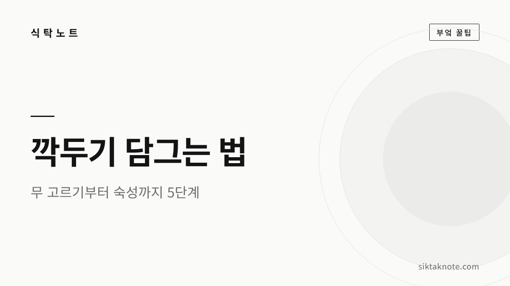
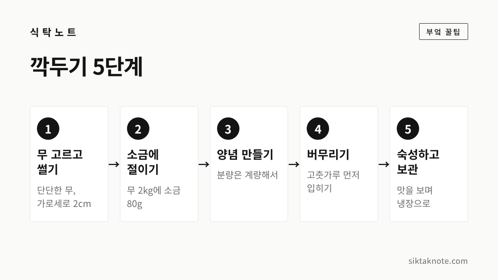
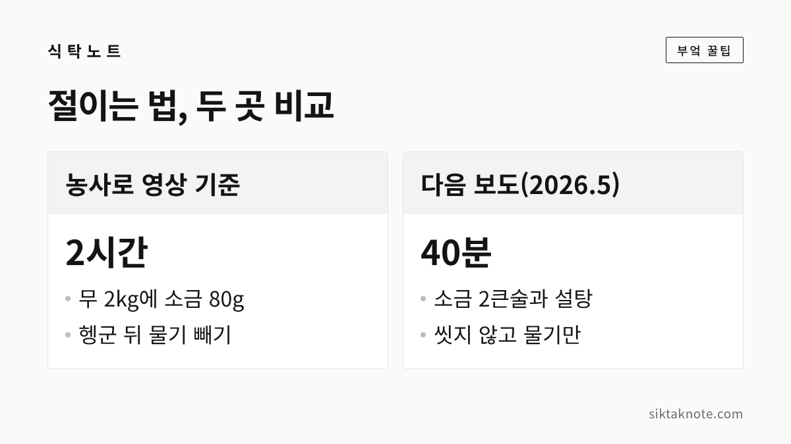

깍두기 담그는 법 5단계, 무 고르기부터 숙성까지

3줄 요약
- 깍두기는 무 고르기와 썰기, 절이기, 양념 만들기, 버무리기, 숙성과 보관의 5단계로 담급니다.
- 무 2kg 기준 소금 80g으로 2시간 절이는 배합을 분량표로 정리했고, 절이는 법이 다른 보도도 나란히 비교했어요.
- 숙성 온도와 기간은 공공 자료에서 확인하지 못해서, 보도마다 다른 내용을 그대로 적었습니다.

깍두기는 김장철에 배추김치와 함께 가장 자주 식탁에 오르는 김치인데요. 무를 깍둑썰기해서 절이고 양념에 버무리면 되니 재료도 과정도 단출한 편입니다. 그래도 절이는 시간이나 양념 분량을 어림짐작으로 하면 간이 들쑥날쑥해지기 쉬워요. 오늘은 다섯 단계로 나눠서 따라 하기 쉽게 적어 보겠습니다.
먼저 알아 둘 것
이 글의 분량표는 농촌진흥청 농사로 영상 「깍두기 담그기」(2002년 제작, 국립농업과학원 협조)의 무 2kg 배합을 기준으로 했습니다. 농사로 페이지는 접속이 막혀 제가 직접 열어 보지 못했고요. 영상 수치를 옮겨 적은 자료와 2026년 11월 2일 위키트리 보도에서 같은 수치를 확인했습니다.
반면 숙성 온도와 기간은 공공기관 자료에서 확인하지 못했어요. 그래서 숙성 부분은 보도에 나온 방법을 그대로 소개하고, 집마다 다르다는 점을 밝혀 두었습니다.

재료는 무 2kg 기준으로 준비해요
아래는 무 2kg에 맞춘 분량입니다. 소금은 무 무게의 4%, 고춧가루는 3% 정도예요. 무가 더 많거나 적다면 비율대로 늘리고 줄이시면 됩니다. 다만 양이 달라질 때 절이는 시간을 어떻게 바꾸는지는 확인한 자료가 없었습니다.
| 재료 | 무 2kg 기준 |
|---|---|
| 무 | 2kg |
| 굵은소금(절이기용) | 80g |
| 고춧가루 | 60g |
| 다진 마늘 | 60g |
| 다진 생강 | 30g |
| 젓갈 | 80g (보도: 멸치액젓 50g, 다진 새우젓 30g) |
| 깨 | 20g |
| 설탕 | 40g |
| 찹쌀풀 | 100g |
| 쪽파·갓 | 각 50g (보도 수치) |
영상 정리 자료에는 젓갈의 종류와 파·갓의 양이 정해져 있지 않았어요. 젓갈 합계 80g은 두 보도 수치를 합친 것과 같아서 함께 적었습니다.
1단계. 무 고르고 2cm로 썰기
위키트리 보도에서는 같은 크기라면 묵직하고 단단한 무, 표면이 매끈하고 잔뿌리가 적은 무를 고르라고 했습니다. 가운데가 붉게 물든 무는 매운맛이 강하니 피하라는 설명도 있었어요. 바람이 든 무는 식감이 푸석하니, 구별하는 방법은 무 보관법에서 확인해 보세요.
썰기는 영상도 보도도 가로세로 2cm 정도로 일정하게 써는 방법을 안내했습니다. 칼질이 번거로우시면 도마 위에서 먼저 길게 막대 모양으로 썬 다음 가로로 썰면 크기를 맞추기 편합니다.
2단계. 소금에 절이고 물기 빼기
썬 무에 굵은소금 80g을 고루 뿌리고 2시간 정도 절입니다. 위키트리 보도에서는 중간에 두 번쯤 뒤집으라고 했어요. 영상은 너무 오래 절이면 조직이 물러져 씹는 맛이 떨어진다고 설명한다고 합니다.
소금을 4% 썼다면 물에 한 번 헹구고 20~30분 물기를 빼라는 게 같은 보도의 안내입니다. 소금을 2%(무 2kg에 40g)만 썼다면 헹구지 않아도 된다고 했고요. 반면 다음(Daum) 「폼나는 밥상」 2026년 5월 29일 기사는 무 1개에 소금 2큰술과 설탕 1/3큰술을 넣고 40분 절인 뒤, 씻지 않고 10분만 물기를 빼는 방법을 소개했습니다.

방법이 이렇게 다르니 시계만 믿지 마시고, 절인 무를 한 조각 먹어 보고 간을 가늠하시면 좋겠습니다. 배추를 절일 때의 기준은 김장 배추 절이는 법에 정리해 두었어요.
3단계. 양념은 계량해서 섞어요
고춧가루, 마늘, 생강, 젓갈, 깨, 설탕, 찹쌀풀을 위 분량대로 섞습니다. 영상은 눈대중이 아니라 정확히 계량하라고 강조한다고 해요. 찹쌀풀은 무 2kg에 100g이 들어가는데, 쑤는 방법은 영상 정리 자료에 나와 있지 않았습니다. 쑤어서 충분히 식힌 뒤에 쓰는 요령은 김장 양념 만드는 법에 적어 두었어요.
양념 재료는 집마다 다릅니다. 같은 다음 기사는 양파와 사과, 홍고추를 곱게 갈아 넣고 대파를 멸치액젓에 절여 국물째 넣는 방법을 소개했어요. 어느 쪽이든 정답이 따로 있는 건 아니니 입맛에 맞게 고르시면 됩니다.
4단계. 고춧가루부터 입히고 버무리기
위키트리 보도의 순서는 이렇습니다. 물기를 뺀 무에 고춧가루 60g을 먼저 넣어 10분쯤 두고, 나머지 양념을 섞어 넣어요. 쪽파와 갓은 마지막에 가볍게 섞습니다. 다음 기사도 고춧가루를 먼저 버무려 색을 입히라고 했습니다.
간은 버무린 직후에 약간 짭조름한 정도가 알맞다는 게 보도의 설명이에요. 싱거우면 멸치액젓이나 고운 소금을 1작은술씩 더해 가며 맞춥니다. 한꺼번에 많이 넣기보다 조금씩 더하시는 편이 안전합니다.
5단계. 담아서 숙성하고 보관하기
깨끗한 밀폐 용기에 용기의 80% 정도만 채우고, 위를 랩으로 덮는 방법이 보도에 나와 있습니다. 80%라는 수치는 위키트리 보도의 안내이고, 공공기관 자료에서는 용기 크기에 따른 기준을 찾지 못했어요.
실온에 얼마나 두는지는 자료마다 달랐습니다. 위키트리 기사 소제목에는 실온에서 반나절 익힌다고 나오지만 본문에 자세한 설명은 없었고, 다음 기사는 실온에서 하루쯤 둔 뒤 위아래를 뒤집어 냉장 보관하라고 했어요. 공공기관 기준은 확인하지 못했습니다. 기온에 따라 익는 속도가 다르니, 중간에 맛을 보고 냉장고로 옮기는 시점을 정하시는 게 좋겠습니다.
너무 익어서 군내가 난다면 버리기 전에 김치 군내 해결법을 읽어 보세요. 무를 소금물에 담가 익히는 물김치가 궁금하시면 동치미 담그는 법도 있습니다.
이럴 땐 이렇게
무에서 푸석한 느낌이 나는 건 바람이 든 무일 수 있습니다. 이 무는 깍두기보다 국이나 조림에 쓰는 편이 낫습니다. 곰팡이가 피었거나 이상한 냄새가 나면 드시지 말고 버리세요.
자주 묻는 질문
설탕은 꼭 넣어야 하나요
영상 배합에는 설탕 40g이 들어 있어요. 반면 다음 기사의 레시피는 설탕 없이 사과와 양파를 갈아 넣었습니다. 단맛은 집마다 취향이 달라서 정해진 기준은 확인하지 못했습니다.
젓갈은 한 가지만 써도 되나요
영상 정리 자료에는 젓갈 종류가 정해져 있지 않았어요. 위키트리 보도는 멸치액젓과 새우젓을 함께 썼고, 한 가지만 쓸 때의 기준은 찾지 못했습니다. 간을 보며 조금씩 조절해 주세요.
지금까지 다섯 단계를 짚어 봤는데요. 무 2kg에 소금 80g이라는 기준을 출발점으로 삼고, 절인 무와 버무린 양념의 간을 직접 보며 맞추시는 게 좋겠습니다.